<!DOCTYPE html>
<html lang="zh-CN">
<head>
  <meta charset="UTF-8">
  <meta name="viewport" content="width=device-width, initial-scale=1.0, viewport-fit=cover">
  <meta name="description" content="《星际探险队：第九行星》（The Crew: The Quest for Planet Nine）官方英文规则书全文中文翻译：合作 · 出墩 · 交流受限 · 50 任务，22 页整本译出，含设置、流程、计分与附录，附官方原文 PDF 链接。">
  <title data-zh="星际探险队：第九行星 (The Crew: The Quest for Planet Nine) · 规则 — 桌游规则书" data-en="The Crew: The Quest for Planet Nine · Rules — Board Game Rules">星际探险队：第九行星 (The Crew: The Quest for Planet Nine) · 规则 — 桌游规则书</title>
  <link rel="icon" href="data:image/svg+xml,<svg xmlns='http://www.w3.org/2000/svg' viewBox='0 0 100 100'><text y='0.9em' font-size='90'>🪐</text></svg>">
  <link rel="stylesheet" href="../assets/css/style.css">
  <link rel="canonical" href="https://rule.zhibinai.cn/games/the-crew-planet-nine.html">
  <meta property="og:site_name" content="桌游规则书">
  <meta property="og:locale" content="zh_CN">
  <meta property="og:type" content="article">
  <meta property="og:title" content="星际探险队：第九行星 (The Crew: The Quest for Planet Nine) · 规则 — 桌游规则书">
  <meta property="og:description" content="《星际探险队：第九行星》（The Crew: The Quest for Planet Nine）官方英文规则书全文中文翻译：合作 · 出墩 · 交流受限 · 50 任务，22 页整本译出，含设置、流程、计分与附录，附官方原文 PDF 链接。">
  <meta property="og:url" content="https://rule.zhibinai.cn/games/the-crew-planet-nine.html">
  <meta property="og:image" content="https://rule.zhibinai.cn/assets/img/the-crew-planet-nine/01.webp">
  <meta name="twitter:card" content="summary_large_image">
  <meta name="twitter:title" content="星际探险队：第九行星 (The Crew: The Quest for Planet Nine) · 规则 — 桌游规则书">
  <meta name="twitter:description" content="《星际探险队：第九行星》（The Crew: The Quest for Planet Nine）官方英文规则书全文中文翻译：合作 · 出墩 · 交流受限 · 50 任务，22 页整本译出，含设置、流程、计分与附录，附官方原文 PDF 链接。">
  <script type="application/ld+json">{
 "@context": "https://schema.org",
 "@graph": [
  {
   "@type": "WebSite",
   "@id": "https://rule.zhibinai.cn/#website",
   "name": "桌游规则书",
   "url": "https://rule.zhibinai.cn/",
   "inLanguage": "zh-CN",
   "description": "免费中文桌游规则书查询站：热门桌游完整中文规则全文 + Board Game Arena 全量官方规则中文版。"
  },
  {
   "@type": "WebPage",
   "@id": "https://rule.zhibinai.cn/games/the-crew-planet-nine.html",
   "url": "https://rule.zhibinai.cn/games/the-crew-planet-nine.html",
   "name": "星际探险队：第九行星 (The Crew: The Quest for Planet Nine) · 规则 — 桌游规则书",
   "description": "《星际探险队：第九行星》（The Crew: The Quest for Planet Nine）官方英文规则书全文中文翻译：合作 · 出墩 · 交流受限 · 50 任务，22 页整本译出，含设置、流程、计分与附录，附官方原文 PDF 链接。",
   "isPartOf": {
    "@id": "https://rule.zhibinai.cn/#website"
   },
   "inLanguage": "zh-CN",
   "dateModified": "2026-11-09",
   "primaryImageOfPage": {
    "@type": "ImageObject",
    "url": "https://rule.zhibinai.cn/assets/img/the-crew-planet-nine/01.webp"
   }
  },
  {
   "@type": "BreadcrumbList",
   "itemListElement": [
    {
     "@type": "ListItem",
     "position": 1,
     "name": "首页",
     "item": "https://rule.zhibinai.cn/"
    },
    {
     "@type": "ListItem",
     "position": 2,
     "name": "星际探险队：第九行星 (The Crew: The Quest for Planet Nine)",
     "item": "https://rule.zhibinai.cn/games/the-crew-planet-nine.html"
    }
   ]
  }
 ]
}</script>
  <!-- seo-wired -->
</head>
<body data-theme="the-crew-planet-nine" data-game-key="the-crew-planet-nine">

  <div class="progress-bar" aria-hidden="true"></div>

  <header class="topbar">
    <button class="menu-btn" aria-label="打开目录" aria-expanded="false" data-i18n-aria="openToc">☰</button>
    <a class="brand" href="../index.html" data-i18n="brand">🎲 桌游规则书</a>
    <span class="topbar-title" data-zh="星际探险队：第九行星" data-en="The Crew: The Quest for Planet Nine">星际探险队：第九行星</span>
  </header>

  <div class="layout">
    <aside class="sidebar" id="sidebar">
      <nav class="toc" aria-label="本页目录" data-i18n-aria="onThisPage">
        <div class="toc-title" data-i18n="onThisPage">本页目录</div>
        <ul id="toc-list"></ul>
      </nav>
      <nav aria-label="全部游戏" data-i18n-aria="allGames">
        <div class="toc-title" data-i18n="allGames">全部游戏</div>
        <ul>
          <li><a href="../index.html" data-i18n="home">🏠 返回首页</a></li>
          <li><a href="7-wonders.html" data-zh="🏛️ 七大奇迹" data-en="🏛️ 7 Wonders">🏛️ 七大奇迹</a></li>
          <li><a href="brass-birmingham.html" data-zh="🏭 工业革命：伯明翰" data-en="🏭 Brass: Birmingham">🏭 工业革命：伯明翰</a></li>
          <li><a href="vale-of-eternity.html" data-zh="✨ 永恒之谷" data-en="✨ The Vale of Eternity">✨ 永恒之谷</a></li>
          <li><a href="wingspan.html" data-zh="🦜 展翅翱翔" data-en="🦜 Wingspan">🦜 展翅翱翔</a></li>
          <li><a href="pokemon-grove.html" data-zh="🌳 宝可梦林地探索" data-en="🌳 Pokemon Grove">🌳 宝可梦林地探索</a></li>
          <li><a href="puerto-rico.html" data-zh="⛵ 波多黎各" data-en="⛵ Puerto Rico">⛵ 波多黎各</a></li>
          <li><a href="barcelona.html" data-zh="🌸 巴塞罗那" data-en="🌸 Barcelona">🌸 巴塞罗那</a></li>
          <li><a href="dune-imperium.html" data-zh="🏜️ 沙丘：帝国" data-en="🏜️ Dune: Imperium">🏜️ 沙丘：帝国</a></li>
          <li><a href="dune-imperium-uprising.html" data-zh="🪱 沙丘：帝国起义" data-en="🪱 Dune: Imperium – Uprising">🪱 沙丘：帝国起义</a></li>
          <li><a href="ascension.html" data-zh="🃏 创升纪元" data-en="🃏 Ascension">🃏 创升纪元</a></li>
          <li><a href="tulip-bubble.html" data-zh="🌷 郁金香泡沫" data-en="🌷 Tulip Bubble">🌷 郁金香泡沫</a></li>
          <li><a href="trajan.html" data-zh="🦅 图拉真" data-en="🦅 Trajan">🦅 图拉真</a></li>
          <li><a href="galileo-galilei.html" data-zh="🔭 伽利略：伽利莱" data-en="🔭 Galileo Galilei">🔭 伽利略：伽利莱</a></li>
          <li><a href="orloj.html" data-zh="🕰️ 奥洛伊：布拉格天文钟" data-en="🕰️ Orloj: The Prague Astronomical Clock">🕰️ 奥洛伊：布拉格天文钟</a></li>
          <li><a href="food-chain-magnate.html" data-zh="🍔 快餐连锁大亨" data-en="🍔 Food Chain Magnate">🍔 快餐连锁大亨</a></li>
          <li><a href="clank-catacombs.html" data-zh="🐉 CLANK! 地下墓穴" data-en="🐉 Clank!: Catacombs">🐉 CLANK! 地下墓穴</a></li>
          <li><a href="clank-catacombs-underworld.html" data-zh="💀 CLANK! 地下墓穴:地下世界" data-en="💀 Clank! Catacombs: Underworld">💀 CLANK! 地下墓穴:地下世界</a></li>
          <li><a href="clank-adventuring-party.html" data-zh="🗡️ CLANK! 冒险队" data-en="🗡️ Clank!: Adventuring Party">🗡️ CLANK! 冒险队</a></li>
          <li><a href="ark-nova-marine-worlds.html" data-zh="🐙 方舟动物园：海洋世界" data-en="🐙 Ark Nova: Marine Worlds">🐙 方舟动物园：海洋世界</a></li>
          <li><a href="arnak-expedition-leaders.html" data-zh="🗿 阿纳克遗迹:探险队长" data-en="🗿 Lost Ruins of Arnak: Expedition Leaders">🗿 阿纳克遗迹:探险队长</a></li>
          <li><a href="speakeasy.html" data-zh="🎷 地下酒吧" data-en="🎷 Speakeasy">🎷 地下酒吧</a></li>
          <li><a href="power-grid.html" data-zh="⚡ 电力公司" data-en="⚡ Power Grid">⚡ 电力公司</a></li>
          <li><a href="seti.html" data-zh="🛰️ SETI：寻找外星人" data-en="🛰️ SETI: Search for Extraterrestrial Intelligence">🛰️ SETI：寻找外星人</a></li>
          <li><a href="seti-space-agencies.html" data-zh="🚀 地外文明：太空机构" data-en="🚀 SETI: Space Agencies">🚀 地外文明：太空机构</a></li>
          <li><a href="white-castle.html" data-zh="🏯 姬路城" data-en="🏯 The White Castle">🏯 姬路城</a></li>
          <li><a href="white-castle-matcha.html" data-zh="🍵 姬路城：茶道" data-en="🍵 The White Castle: Matcha">🍵 姬路城：茶道</a></li>
          <li><a href="endeavor-deep-sea.html" data-zh="🌊 奋进号：深海" data-en="🌊 Endeavor: Deep Sea">🌊 奋进号：深海</a></li>
          <li><a href="druids-of-edora.html" data-zh="🌲 埃多拉的德鲁伊" data-en="🌲 The Druids of Edora">🌲 埃多拉的德鲁伊</a></li>
          <li><a href="grand-austria-hotel.html" data-zh="🏨 奥地利大饭店" data-en="🏨 Grand Austria Hotel">🏨 奥地利大饭店</a></li>
          <li><a href="the-message.html" data-zh="🕵️ 风声再临" data-en="🕵️ The Message">🕵️ 风声再临</a></li>
          <li><a href="gwt-new-zealand.html" data-zh="🐑 大西部开拓者:新西兰" data-en="🐑 Great Western Trail: New Zealand">🐑 大西部开拓者:新西兰</a></li>
          <li><a href="fields-of-arle.html" data-zh="🌾 阿勒農場" data-en="🌾 Fields of Arle">🌾 阿勒農場</a></li>
          <li><a href="gaiaproject-lost-fleet.html" data-zh="🌌 盖亚计划:失落的舰队" data-en="🌌 Gaia Project: The Lost Fleet">🌌 盖亚计划:失落的舰队</a></li>
          <li><a href="spirit-island.html" data-zh="🏝️ 灵迹岛" data-en="🏝️ Spirit Island">🏝️ 灵迹岛</a></li>
          <li><a href="harmonies.html" data-zh="🦁 自然和弦" data-en="🦁 Harmonies">🦁 自然和弦</a></li>
          <li><a href="agricola-revised.html" data-zh="🌾 农场主（修订版）" data-en="🌾 Agricola (Revised Edition)">🌾 农场主（修订版）</a></li>
          <li><a href="final-girl.html" data-zh="🎬 最终女孩" data-en="🎬 Final Girl">🎬 最终女孩</a></li>
          <li><a href="le-havre.html" data-zh="⚓ 勒阿弗尔" data-en="⚓ Le Havre">⚓ 勒阿弗尔</a></li>
          <li><a href="lotr-duel-for-middle-earth.html" data-zh="🌋 魔戒：中土对决" data-en="🌋 The Lord of the Rings: Duel for Middle-earth">🌋 魔戒：中土对决</a></li>
          <li><a href="marvel-champions.html" data-zh="🦸 漫威群英传：卡牌版" data-en="🦸 Marvel Champions: The Card Game">🦸 漫威群英传：卡牌版</a></li>
          <li><a href="nemesis.html" data-zh="👽 复仇女神号" data-en="👽 Nemesis">👽 复仇女神号</a></li>
          <li><a href="pandemic-legacy-season-0.html" data-zh="🕵️ 瘟疫危机：传承·第0季" data-en="🕵️ Pandemic Legacy: Season 0">🕵️ 瘟疫危机：传承·第0季</a></li>
          <li><a href="pandemic-legacy-season-1.html" data-zh="🦠 瘟疫危机：传承·第一季" data-en="🦠 Pandemic Legacy: Season 1">🦠 瘟疫危机：传承·第一季</a></li>
          <li><a href="android-netrunner.html" data-zh="🤖 安卓：潜袭" data-en="🤖 Android: Netrunner">🤖 安卓：潜袭</a></li>
          <li><a href="arkham-horror-lcg.html" data-zh="🔍 诡镇奇谈：卡牌版" data-en="🔍 Arkham Horror: The Card Game">🔍 诡镇奇谈：卡牌版</a></li>
          <li><a href="bomb-busters.html" data-zh="💣 拆弹小队" data-en="💣 Bomb Busters">💣 拆弹小队</a></li>
          <li><a href="cascadia.html" data-zh="🌲 卡斯卡迪亚" data-en="🌲 Cascadia">🌲 卡斯卡迪亚</a></li>
          <li><a href="everdell.html" data-zh="🌰 仙境幽谷" data-en="🌰 Everdell">🌰 仙境幽谷</a></li>
          <li><a href="five-tribes.html" data-zh="🏜️ 五大部落" data-en="🏜️ Five Tribes: The Djinns of Naqala">🏜️ 五大部落</a></li>
          <li><a href="kanban-ev.html" data-zh="🚗 看板：电动汽车版" data-en="🚗 Kanban EV">🚗 看板：电动汽车版</a></li>
          <li><a href="lisboa.html" data-zh="🏛️ 里斯本" data-en="🏛️ Lisboa">🏛️ 里斯本</a></li>
          <li><a href="mage-knight.html" data-zh="🧙 魔骑士" data-en="🧙 Mage Knight Board Game">🧙 魔骑士</a></li>
          <li><a href="mansions-of-madness-2e.html" data-zh="🏚️ 疯狂诡宅（第二版）" data-en="🏚️ Mansions of Madness: Second Edition">🏚️ 疯狂诡宅（第二版）</a></li>
          <li><a href="paladins-of-the-west-kingdom.html" data-zh="🛡️ 西王国的圣骑士" data-en="🛡️ Paladins of the West Kingdom">🛡️ 西王国的圣骑士</a></li>
          <li><a href="pandemic-legacy-season-2.html" data-zh="🧭 瘟疫危机：传承·第二季" data-en="🧭 Pandemic Legacy: Season 2">🧭 瘟疫危机：传承·第二季</a></li>
          <li><a href="quacks.html" data-zh="🧪 奎德林堡的江湖郎中" data-en="🧪 Quacks">🧪 奎德林堡的江湖郎中</a></li>
          <li><a href="root.html" data-zh="🦊 茂林源记" data-en="🦊 Root">🦊 茂林源记</a></li>
          <li><a href="slay-the-spire-bg.html" data-zh="🗡️ 杀戮尖塔：版图游戏" data-en="🗡️ Slay the Spire: The Board Game">🗡️ 杀戮尖塔：版图游戏</a></li>
          <li><a href="star-wars-imperial-assault.html" data-zh="🎯 星球大战：帝国突击" data-en="🎯 Star Wars: Imperial Assault">🎯 星球大战：帝国突击</a></li>
          <li><a href="star-wars-rebellion.html" data-zh="🚀 星球大战：叛乱" data-en="🚀 Star Wars: Rebellion">🚀 星球大战：叛乱</a></li>
          <li><a href="the-gallerist.html" data-zh="🖼️ 画商" data-en="🖼️ The Gallerist">🖼️ 画商</a></li>
          <li><a href="ticket-to-ride-legacy.html" data-zh="🚂 车票之旅：传承·西部传奇" data-en="🚂 Ticket to Ride Legacy: Legends of the West">🚂 车票之旅：传承·西部传奇</a></li>
          <li><a href="tzolkin.html" data-zh="🌀 卓尔金历：玛雅历法" data-en="🌀 Tzolk'in: The Mayan Calendar">🌀 卓尔金历：玛雅历法</a></li>
          <li><a href="underwater-cities.html" data-zh="🌊 水下城市" data-en="🌊 Underwater Cities">🌊 水下城市</a></li>
          <li><a href="blood-on-the-clocktower.html" data-zh="🔔 血染钟楼" data-en="🔔 Blood on the Clocktower">🔔 血染钟楼</a></li>
          <li><a href="oathsworn.html" data-zh="🐺 守誓者：深入密林" data-en="🐺 Oathsworn: Into the Deepwood">🐺 守誓者：深入密林</a></li>
          <li><a href="cthulhu-death-may-die.html" data-zh="🐙 克苏鲁：死亡可能会死" data-en="🐙 Cthulhu: Death May Die">🐙 克苏鲁：死亡可能会死</a></li>
          <li><a href="too-many-bones.html" data-zh="💀 太多骨头" data-en="💀 Too Many Bones">💀 太多骨头</a></li>
          <li><a href="crokinole.html" data-zh="🎯 弹指棋" data-en="🎯 Crokinole">🎯 弹指棋</a></li>
          <li><a href="wingspan-asia.html" data-zh="🐦 展翅翱翔：亚洲" data-en="🐦 Wingspan Asia">🐦 展翅翱翔：亚洲</a></li>
          <li><a href="viticulture.html" data-zh="🍇 葡萄酒庄园（核心版）" data-en="🍇 Viticulture Essential Edition">🍇 葡萄酒庄园（核心版）</a></li>
          <li><a href="twilight-struggle.html" data-zh="🌍 冷战热斗" data-en="🌍 Twilight Struggle">🌍 冷战热斗</a></li>
          <li><a href="on-mars.html" data-zh="🔴 火星之上" data-en="🔴 On Mars">🔴 火星之上</a></li>
          <li><a href="war-of-the-ring.html" data-zh="💍 魔戒圣战" data-en="💍 War of the Ring: Second Edition">💍 魔戒圣战</a></li>
          <li><a href="mechs-vs-minions.html" data-zh="⚙️ 机甲大战小兵" data-en="⚙️ Mechs vs. Minions">⚙️ 机甲大战小兵</a></li>
          <li><a href="clank-legacy.html" data-zh="🐉 咔嚓！传承：收购公司" data-en="🐉 Clank! Legacy: Acquisitions Incorporated">🐉 咔嚓！传承：收购公司</a></li>
          <li><a href="eclipse-second-dawn.html" data-zh="🌌 星蚀：银河二次黎明" data-en="🌌 Eclipse: Second Dawn for the Galaxy">🌌 星蚀：银河二次黎明</a></li>
          <li><a href="voidfall.html" data-zh="🌑 虚空坠落" data-en="🌑 Voidfall">🌑 虚空坠落</a></li>
          <li><a href="sleeping-gods.html" data-zh="🛶 沉睡之神" data-en="🛶 Sleeping Gods">🛶 沉睡之神</a></li>
          <li><a href="gloomhaven.html" data-zh="⚔️ 幽港迷城" data-en="⚔️ Gloomhaven">⚔️ 幽港迷城</a></li>
          <li><a href="gloomhaven-jaws-of-the-lion.html" data-zh="🦁 幽港迷城：雄狮之颚" data-en="🦁 Gloomhaven: Jaws of the Lion">🦁 幽港迷城：雄狮之颚</a></li>
          <li><a href="frosthaven.html" data-zh="❄️ 寒霜迷城" data-en="❄️ Frosthaven">❄️ 寒霜迷城</a></li>
        </ul>
      </nav>
    </aside>
    <div class="backdrop" id="backdrop" aria-hidden="true"></div>

    <main class="content">
      <article data-page-lang="zh" data-alt-body="../assets/i18n/rulebooks/the-crew-planet-nine.en.html">
        <header class="page-header">
          <h1 class="game-title" data-zh="🪐 星际探险队：第九行星" data-en="🪐 The Crew: The Quest for Planet Nine">🪐 星际探险队：第九行星</h1>
          <p class="game-sub" data-zh="The Crew: The Quest for Planet Nine · 设计：Thomas Sing · Thames &amp; Kosmos 出版 · 2–5 人 · 官方英文规则书全文翻译（22 页 · AI 辅助机翻）" data-en="The Crew: The Quest for Planet Nine · Official English rulebook · 22 pages" >The Crew: The Quest for Planet Nine · 设计：Thomas Sing · Thames &amp; Kosmos 出版 · 2–5 人 · 官方英文规则书全文翻译（22 页 · AI 辅助机翻）</p>
          <div class="meta-chips">
            <a class="meta-chip bgg-chip" href="https://boardgamegeek.com/boardgame/284083" target="_blank" rel="noopener" title="BoardGameGeek：⭐综合评分 7.8，排名 #97，权重/复杂度 -/5（1 轻松 ~ 5 重度），4.9万人评分。点击查看原页面">⭐ BGG 7.8 · 排名 #97 · 4.9万人评分</a>
            <span class="meta-chip">👥 2–5 人</span>
            <span class="meta-chip">合作 · 出墩</span>
            <span class="meta-chip">交流受限 · 50 任务</span>
            <span class="meta-chip">📖 官方英文规则书全文翻译</span>
          </div>
        </header>

        <div class="rule-body">
<blockquote>
<p>本页收录《星际探险队：第九行星》（The Crew: The Quest for Planet Nine, 2019）的<strong>原版官方规则书全部 22 页</strong>（底本：<a href="https://cdn.shopify.com/s/files/1/0104/6331/3977/files/691868_Crew_Manual.pdf" target="_blank" rel="noopener">Thames &amp; Kosmos 官方（官方商店 Shopify CDN）</a>，691868_Crew_Manual.pdf），逐页随图排列，<strong>点击任意图片即可放大查看</strong>；每页下方默认折叠了该页的 AI 辅助中文机翻对照，需要时可展开。规则内容归 Thames &amp; Kosmos 及版权方所有，收录仅供个人学习查阅。</p>
<p><small>整理说明：机翻对照按本站术语口径对齐（牌库/手牌/回合/轮/板块/指示物等），PDF 图文混排页的语序可能与原书视觉顺序略有出入；规则细节请一律以页面上方原书页面为准。</small></p>
</blockquote>

<figure>
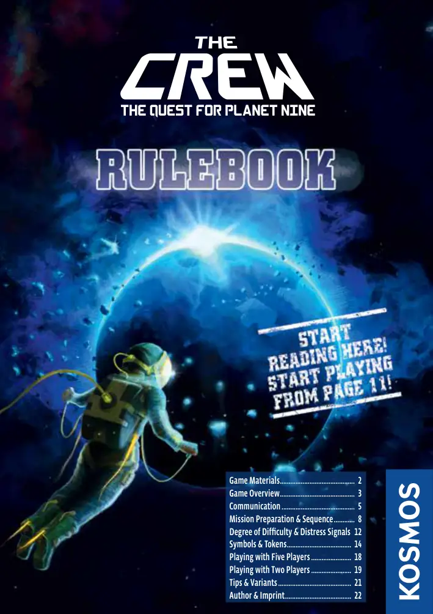
<figcaption>原版规则书 · 第 1 页（点击图片放大）</figcaption>
</figure>

<details class="mt-fold">
<summary>📝 第 1 页 AI 机翻对照（点击展开）</summary>
<div class="mt-body"><p>游戏材料...........................................  2</p>

<p>游戏概述...........................................  3</p>

<p>沟通...........................................  5</p>

<p>任务准备与流程............  8</p>

<p>难度等级与求救信号 . 12</p>

<p>符号与指示物..................................... 14</p>

<p>五人游戏........................ 18</p>

<p>两人游戏........................ 19</p>

<p>技巧与变体.......................................... 21</p>

<p>作者与出版社...................................... 22</p></div>
</details>

<figure>
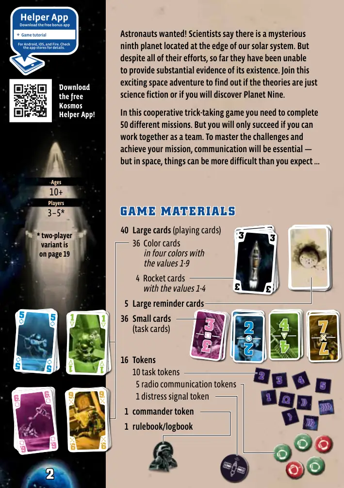
<figcaption>原版规则书 · 第 2 页（点击图片放大）</figcaption>
</figure>

<details class="mt-fold">
<summary>📝 第 2 页 AI 机翻对照（点击展开）</summary>
<div class="mt-body"><p>招募宇航员！科学家们说在太阳系边缘存在一颗神秘的</p>

<p>第九行星。但</p>

<p>尽管他们付出了所有努力，至今仍无法提供</p>

<p>其存在的实质性证据。加入这场激动人心的太空冒险，</p>

<p>看看这些理论只是科幻小说，还是你将发现第九行星。</p>

<p>在这款合作式墩牌游戏中，你需要完成50个不同的任务。但只有</p>

<p>作为团队合作，你才能成功。要掌握挑战并完成任务，</p>

<p>沟通将至关重要——但在太空中，事情可能比你想象的更困难...</p>

<h2>游戏材料</h2>

<h2>游戏材料</h2>

<p>40	 大牌（游戏牌）</p>

<p>36  色牌</p>

<p>四种颜色，数值为1-9</p>

<p>4  火箭牌</p>

<p>数值为1-4</p>

<p>5	 大提示牌</p>

<p>36	 小牌</p>

<p>（任务牌）</p>

<p>16	 指示物</p>

<p>10 任务指示物</p>

<p>5 无线电通信指示物</p>

<p>1 求救信号指示物</p>

<p>1	 指挥官指示物</p>

<p>1	 规则书/任务日志</p>

<p>年龄</p>

<p>10+</p>

<p>玩家</p>

<p>3–5*</p>

<ul>
  <li>两人游戏</li>
</ul>

<p>变体见</p>

<p>第19页</p>

<p>下载</p>

<p>免费的</p>

<p>Kosmos</p>

<p>辅助应用！</p>

<p>适用于Android、iOS和Fire。请</p>

<p>查看应用商店获取详情。</p>

<p>游戏教程</p>

<p>下载免费的奖励应用</p>

<p>辅助应用</p></div>
</details>

<figure>
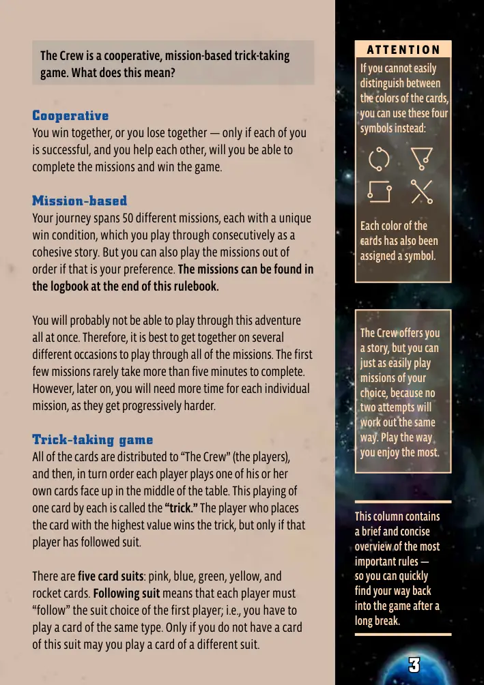
<figcaption>原版规则书 · 第 3 页（点击图片放大）</figcaption>
</figure>

<details class="mt-fold">
<summary>📝 第 3 页 AI 机翻对照（点击展开）</summary>
<div class="mt-body"><p>合作模式</p>

<p>你们一起赢，或者一起输——只有当每个人都取得成功，并且互相帮助时，你们才能完成任务并赢得游戏。</p>

<p>基于任务</p>

<p>你们的旅程跨越50个不同的任务，每个任务都有独特的获胜条件，你们作为一个连贯的故事依次进行这些任务。但如果您愿意，也可以按任意顺序进行这些任务。这些任务可以在本规则书末尾的日志本中找到。</p>

<p>您可能无法一次性完成整个冒险。因此，最好在不同的场合多次聚会来完成所有任务。前几个任务很少需要超过五分钟就能完成。然而，随着任务逐渐变难，您之后需要为每个单独的任务花费更多时间。</p>

<p>墩类游戏</p>

<p>所有的牌都会分发给"船员"（玩家），然后按回合顺序，每个玩家将自己的一张牌面朝上放在桌子中央。每个玩家各出一张牌被称为"一墩"。打出最高点数牌的玩家赢得这一墩，但前提是该玩家必须跟出了相同花色。</p>

<p>共有五种牌的花色：粉色、蓝色、绿色、黄色和火箭牌。跟出花色意味着每个玩家必须"跟随"第一个玩家的花色选择；也就是说，你必须打出相同类型的牌。只有当你没有这种花色的牌时，才能打出其他花色的牌。</p>

<h2>注 意</h2>

<p>如果你不容易区分</p>

<p>牌的颜色，</p>

<p>你可以使用这四个</p>

<p>符号代替：</p>

<p>每种颜色的</p>

<p>牌也被分配了一个符号。</p>

<p>《The Crew》为你提供了一个故事，但你也可以轻松选择自己喜欢的任务进行游戏，因为没有任何两次尝试会以相同的方式进行。用你最享受的方式游戏。</p>

<p>《The Crew》是一款合作式、基于任务的墩类游戏。这是什么意思？</p>

<p>这一栏包含</p>

<p>最重要规则的</p>

<p>简明概述——</p>

<p>这样您在</p>

<p>长时间休息后</p>

<p>可以快速重新</p>

<p>进入游戏。</p></div>
</details>

<figure>
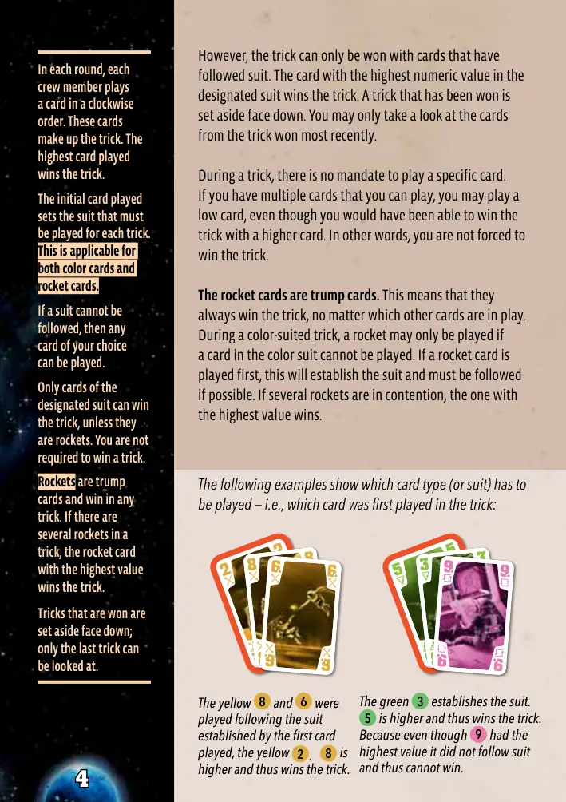
<figcaption>原版规则书 · 第 4 页（点击图片放大）</figcaption>
</figure>

<details class="mt-fold">
<summary>📝 第 4 页 AI 机翻对照（点击展开）</summary>
<div class="mt-body"><p>然而，一墩只能用跟出花色的牌来赢。指定花色中数值最高的牌赢得该墩。赢得的墩会被面朝下放置。你只能查看最近赢得的那墩中的牌。</p>

<p>在一墩中，没有必须出特定牌的规定。如果你有多个可以出的牌，你可以出一张低牌，即使你本可以用一张高牌赢得该墩。换句话说，你并非必须赢得该墩。</p>

<p>火箭牌是王牌。这意味着无论其他牌是什么，它们总是能赢得该墩。在花色墩中，只有在无法出该花色牌时才能出火箭牌。如果先出了一张火箭牌，这将确定花色，并且必须尽可能跟出。如果有多个火箭牌竞争，数值最高的那张获胜。</p>

<p>以下示例展示了必须出哪种牌型（或花色）——即，哪张牌是首先在该墩中打出的：</p>

<p>每轮中，每位船员按顺时针顺序出一张牌。这些牌组成一墩。打出的最高牌赢得该墩。</p>

<p>首先打出的牌确定了每墩必须跟出的花色。这适用于花色牌和火箭牌。</p>

<p>如果无法跟出花色，则可以出任意你选择的牌。</p>

<p>只有指定花色的牌能赢得该墩，除非它们是火箭牌。你并非必须赢得一墩。</p>

<p>火箭牌是王牌，能在任何墩中获胜。如果一墩中有多个火箭牌，数值最高的火箭牌赢得该墩。</p>

<p>赢得的墩会被面朝下放置；只有最后一墩可以被查看。</p>

<p>黄色8和6跟出了由第一张打出的牌黄色2确定的花色。8更高，因此赢得该墩。</p>

<p>绿色3确定了花色。5更高，因此赢得该墩。</p>

<p>因为尽管9数值最高，但它没有跟出花色，因此不能获胜。</p></div>
</details>

<figure>
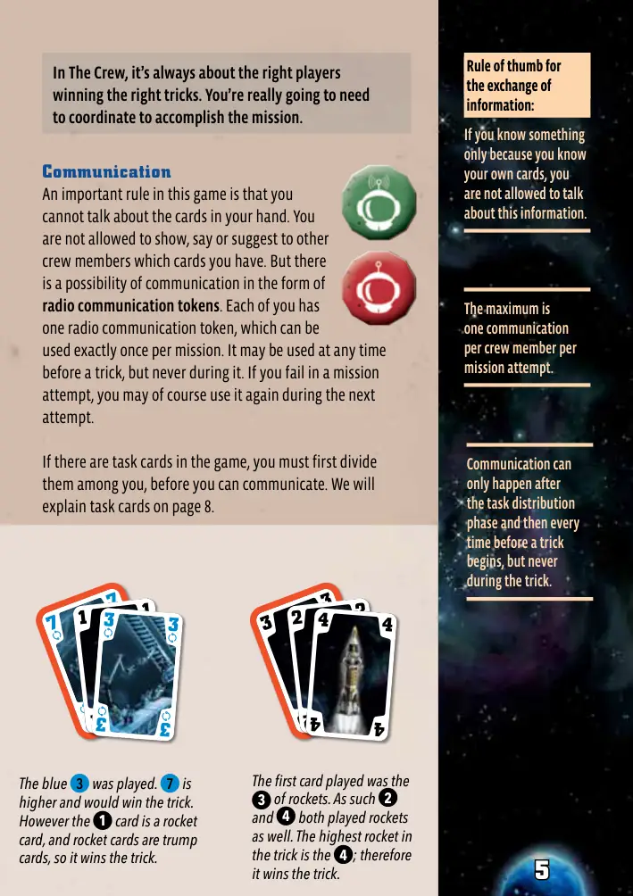
<figcaption>原版规则书 · 第 5 页（点击图片放大）</figcaption>
</figure>

<details class="mt-fold">
<summary>📝 第 5 页 AI 机翻对照（点击展开）</summary>
<div class="mt-body"><h2>交流</h2>

<p>本游戏中一个重要的规则是，你不能讨论你手中的牌。你不允许向其他船员展示、说出或暗示你拥有哪些牌。但是，有一种通过无线电通讯指示物进行交流的可能性。你们每人都有一个无线电通讯指示物，每个任务中只能使用一次。它可以在任何一墩开始前使用，但在墩进行中绝不能使用。如果你尝试任务失败，你当然可以在下一次尝试中再次使用它。</p>

<p>如果游戏中有任务牌，你必须先分配它们，然后才能进行交流。我们将在第8页解释任务牌。</p>

<p>信息交流的经验法则：</p>

<p>如果你仅仅因为知道自己的牌而知道某些信息，你不被允许谈论这些信息。</p>

<p>每位船员在每个任务尝试中最多只能进行一次交流。</p>

<p>交流只能在任务分配阶段之后进行，然后每次在一墩开始前，但在墩进行中绝不能进行。</p>

<p>蓝色3被打出。7更高，将赢得这墩。然而1是一张火箭牌，而火箭牌是王牌，所以它赢得这墩。</p>

<p>第一张打出的牌是火箭3。因此2和4也都打出了火箭牌。这墩中最高的火箭是4；因此它赢得这墩。</p>

<p>在《船员》(The Crew)中，总是关于正确的玩家赢得正确的墩。你们真的需要协调才能完成任务。</p></div>
</details>

<figure>
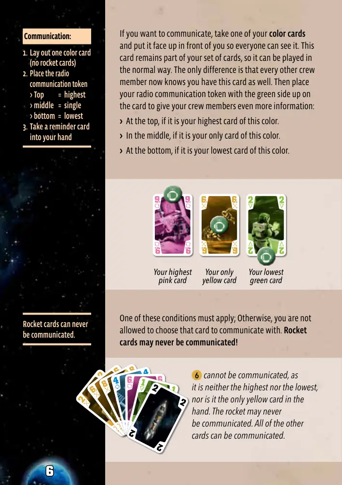
<figcaption>原版规则书 · 第 6 页（点击图片放大）</figcaption>
</figure>

<details class="mt-fold">
<summary>📝 第 6 页 AI 机翻对照（点击展开）</summary>
<div class="mt-body"><p>如果你想进行交流，拿出一张你的颜色牌，正面朝上放在你面前，让所有人都能看到。这张牌仍然是你牌组的一部分，因此可以按正常方式打出。唯一的区别是，现在其他所有船员都知道你拥有这张牌。然后将你的无线电通讯指示物绿色面朝上放在这张牌上，给你的船员提供更多信息：</p>

<blockquote>
<p>在顶部，如果这是你该颜色的最高牌。</p>

<p>在中间，如果这是你该颜色的唯一一张牌。</p>

<p>在底部，如果这是你该颜色的最低牌。</p>
</blockquote>

<p>必须满足其中一个条件；否则，你不允许选择那张牌进行交流。火箭牌永远不能被交流！</p>

<p>6不能被交流，因为它既不是最高的也不是最低的，也不是手中唯一的黄色牌。火箭牌永远不能被交流。所有其他牌都可以被交流。</p>

<p>你最高的</p>

<p>粉色牌</p>

<p>你唯一的</p>

<p>黄色牌</p>

<p>你最低的</p>

<p>绿色牌</p>

<p>火箭牌永远</p>

<p>不能被交流。</p>

<p>交流：</p>

<h3>1. 	打出一张颜色牌</h3>

<p>（非火箭牌）</p>

<h3>2. 	放置无线电通讯指示物</h3>

<blockquote>
<p>顶部 = 最高</p>

<p>中间 = 唯一</p>

<p>底部 = 最低</p>
</blockquote>

<ol>
  <li>拿一张提醒牌到手牌中</li>
</ol></div>
</details>

<figure>
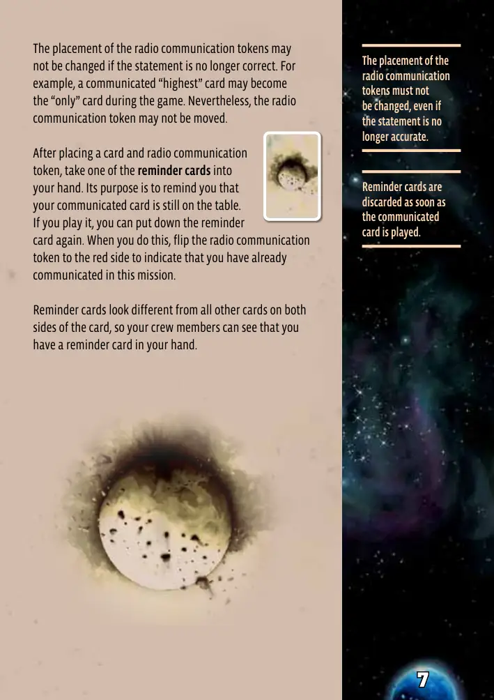
<figcaption>原版规则书 · 第 7 页（点击图片放大）</figcaption>
</figure>

<details class="mt-fold">
<summary>📝 第 7 页 AI 机翻对照（点击展开）</summary>
<div class="mt-body"><p>如果陈述不再正确，无线电通讯指示物的位置不能更改。例如，一张被交流的"最高"牌可能在游戏中变成"唯一"牌。尽管如此，无线电通讯指示物也不能移动。</p>

<p>在放置牌和无线电通讯指示物后，拿一张提醒牌到手牌中。它的目的是提醒你被交流的牌仍然在桌上。如果你打出它，可以再次放下提醒牌。这样做时，将无线电通讯指示物翻到红色面，表示你已经在这个任务中进行了交流。</p>

<p>提醒牌在卡牌的两边都与其他所有牌不同，因此你的船员可以看到你手中有提醒牌。</p>

<p>无线电通讯</p>

<p>指示物的位置</p>

<p>必须不能更改，即使</p>

<p>陈述不再准确。</p>

<p>提醒牌在被交流</p>

<p>的牌被打出后立即</p>

<p>被弃置。</p></div>
</details>

<figure>
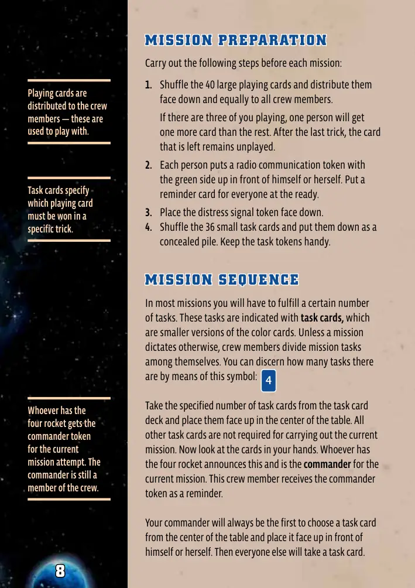
<figcaption>原版规则书 · 第 8 页（点击图片放大）</figcaption>
</figure>

<details class="mt-fold">
<summary>📝 第 8 页 AI 机翻对照（点击展开）</summary>
<div class="mt-body"><h2>任务准备</h2>

<h2>任务准备</h2>

<p>在每个任务开始前，执行以下步骤：</p>

<ol>
  <li>将40张大牌洗牌，然后面朝下平均分发给所有船员。</li>
</ol>

<p>如果你们有三人游戏，会有一个人比其他人多一张牌。在最后一墩之后，剩下的那张牌将不会被打出。</p>

<ol>
  <li>每个人在自己面前放置一个绿色面朝上的无线电通讯指示物。为所有人准备好提示卡。</li>
  <li>将求救信号指示物面朝下放置。</li>
  <li>将36张小任务卡洗牌，然后面朝下堆叠成隐藏牌堆。将任务指示物放在手边。</li>
</ol>

<h2>任务流程</h2>

<h2>任务流程</h2>

<p>在大多数任务中，你们需要完成一定数量的任务。这些任务由任务卡表示，它们是彩色牌的较小版本。除非任务另有说明，船员们自行分配任务。你可以通过以下符号判断有多少任务：</p>

<p>从任务卡牌库中取出指定数量的任务卡，面朝上放在桌子中央。所有其他任务卡在执行当前任务时不需要。现在查看你的手牌。谁拥有四张火箭牌，谁就宣布这一点，并成为当前任务的指挥官。这位船员获得指挥官指示物作为提醒。</p>

<p>你们的指挥官总是第一个从桌子中央选择一张任务卡，面朝上放在自己面前。然后其他人每人拿一张任务牌。</p>

<p>牌被分发给船员</p>

<p>们——这些是用来</p>

<p>游戏的牌。</p>

<p>任务卡指定了</p>

<p>必须在特定一墩</p>

<p>中赢得的牌。</p>

<p>谁拥有四张火箭</p>

<p>牌，谁就获得当</p>

<p>前任务尝试的指</p>

<p>挥官指示物。指</p>

<p>挥官仍然是船员</p>

<p>的一员。</p></div>
</details>

<figure>
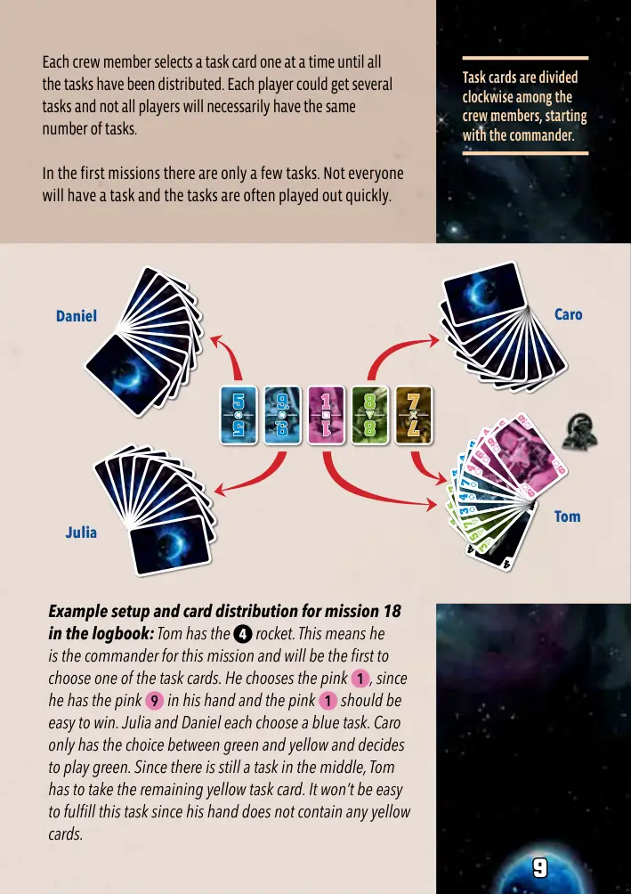
<figcaption>原版规则书 · 第 9 页（点击图片放大）</figcaption>
</figure>

<details class="mt-fold">
<summary>📝 第 9 页 AI 机翻对照（点击展开）</summary>
<div class="mt-body"><p>每位船员依次选择一张任务卡，直到所有任务都被分发完毕。每位玩家可能获得多个任务，且并非所有玩家拥有的任务数量都相同。</p>

<p>在最初的几个任务中，任务数量很少。不是每个人都会有任务，而且这些任务往往很快就能完成。</p>

<p>汤姆</p>

<p>任务卡按顺时针方向</p>

<p>分发给船员，从指挥官</p>

<p>开始。</p>

<p>朱莉娅</p>

<p>卡罗</p>

<p>丹尼尔</p>

<p>任务日志中第18个任务的示例设置和卡牌分发：汤姆拥有4号火箭。这意味着他是本次任务的指挥官，将首先选择一张任务卡。他选择了粉色1，因为他的手中有粉色9，而粉色1应该很容易赢。朱莉娅和丹尼尔各选择了一张蓝色任务。卡罗只能在绿色和黄色之间选择，并决定选择绿色。由于中间还有一张任务卡，汤姆必须拿走剩下的黄色任务卡。这对他来说不容易完成，因为他的手牌中没有任何黄色牌。</p></div>
</details>

<figure>
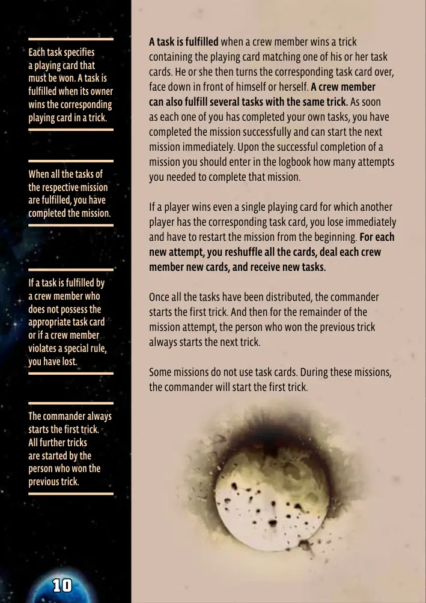
<figcaption>原版规则书 · 第 10 页（点击图片放大）</figcaption>
</figure>

<details class="mt-fold">
<summary>📝 第 10 页 AI 机翻对照（点击展开）</summary>
<div class="mt-body"><p>当船员赢得一墩包含与其任务卡相匹配的出牌时，任务即被完成。然后，他将相应的任务牌翻面，放在自己面前朝下。船员也可以用同一墩完成多个任务。一旦每个人都完成了自己的任务，你们就成功完成了任务，可以立即开始下一个任务。成功完成任务后，你应该在任务日志中记录完成该任务所需的尝试次数。</p>

<p>如果玩家赢得了一张其他玩家拥有对应任务卡的出牌，你们将立即失败，必须从头重新开始任务。对于每次新的尝试，你们需要洗所有牌，给每位船员发新牌，并获得新任务。</p>

<p>一旦所有任务都被分发完毕，指挥官开始第一墩。在剩余的任务尝试中，总是由赢得前一墩的人开始下一墩。</p>

<p>有些任务不使用任务卡。在这些任务中，指挥官将开始第一墩。</p>

<p>每个任务都指定了一张必须赢得的出牌。当任务的拥有者在某一墩中赢得对应的出牌时，任务即被完成。当所有相应任务的任务都被完成时，你们就完成了任务。</p>

<p>如果任务被一位不拥有相应任务卡的船员完成，或者有船员违反了特殊规则，你们就失败了。</p>

<p>指挥官总是开始第一墩。</p>

<p>所有后续的墩都由</p>

<p>赢得前一墩的人开始。</p></div>
</details>

<figure>
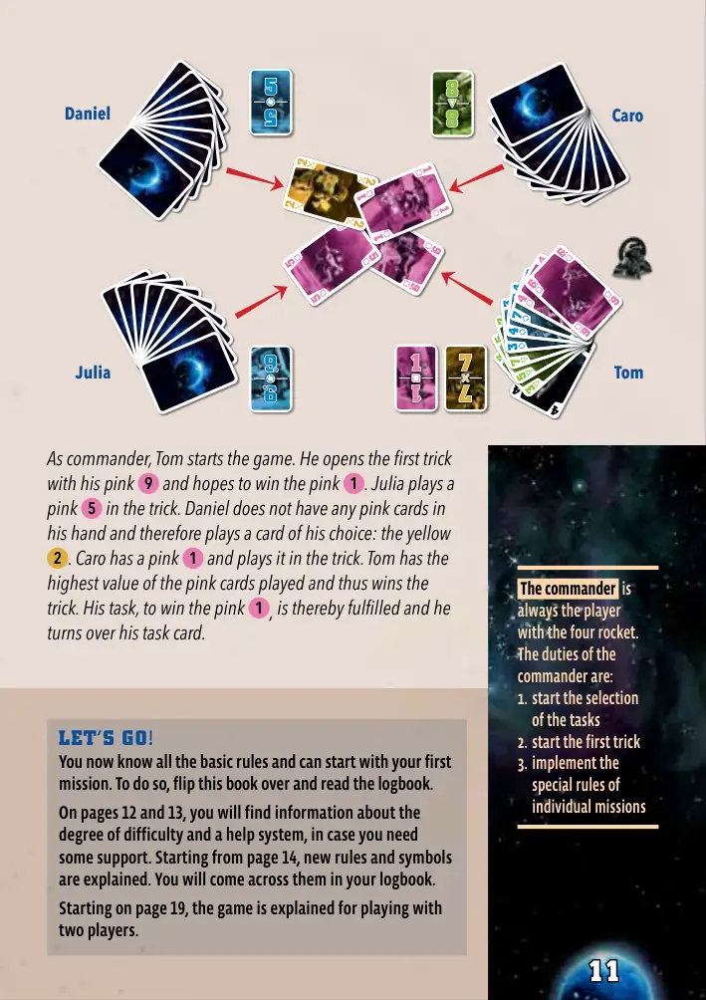
<figcaption>原版规则书 · 第 11 页（点击图片放大）</figcaption>
</figure>

<details class="mt-fold">
<summary>📝 第 11 页 AI 机翻对照（点击展开）</summary>
<div class="mt-body"><p>汤姆</p>

<p>朱莉娅</p>

<p>卡罗</p>

<p>丹尼尔</p>

<p>作为指挥官，汤姆开始游戏。他用他的粉色9开启了第一墩，并希望赢得粉色1。朱莉娅在这一墩中打出了一张粉色5。丹尼尔手中没有任何粉色牌，因此打出了一张他选择的牌：黄色2。卡罗有一张粉色1，并在这一墩中打出它。汤姆打出的粉色牌数值最高，因此赢得了这一墩。他的任务——赢得粉色1——就此完成，于是他翻开了自己的任务卡。</p>

<p>让我们开始！</p>

<p>现在你已经知道了所有基本规则，可以开始你的第一个任务了。为此，请将这本书翻过来阅读日志。在第12和13页，你会找到关于难度等级和辅助系统的信息，以防你需要一些支持。从第14页开始，会解释新的规则和符号，你会在日志中遇到它们。从第19页开始，会解释双人游戏的规则。</p>

<p>指挥官总是</p>

<p>持有四枚火箭的</p>

<p>玩家。</p>

<p>指挥官的职责是：</p>

<ol>
  <li>开始选择任务</li>
  <li>开始第一墩</li>
  <li>执行各个特殊任务规则</li>
</ol></div>
</details>

<figure>
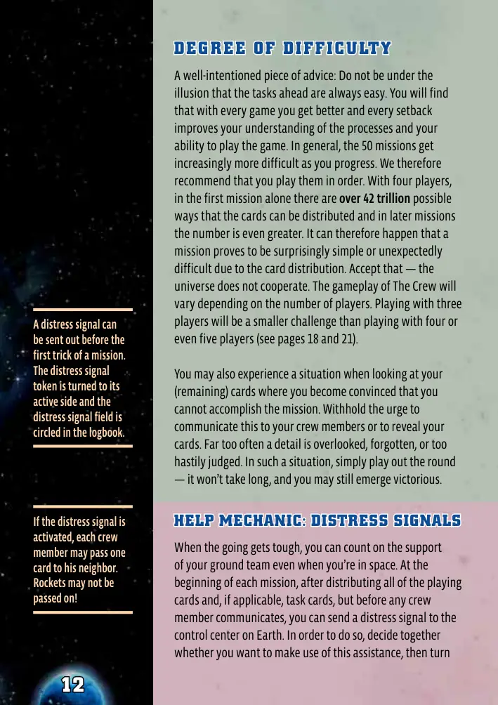
<figcaption>原版规则书 · 第 12 页（点击图片放大）</figcaption>
</figure>

<details class="mt-fold">
<summary>📝 第 12 页 AI 机翻对照（点击展开）</summary>
<div class="mt-body"><h2>难度等级</h2>

<h2>难度等级</h2>

<p>善意的建议：不要误以为前方的任务总是很容易。你会发现，每玩一局游戏你都会变得更好，每一次挫折都会加深你对游戏流程的理解和你玩这款游戏的能力。总体而言，随着你的进展，50个任务会变得越来越困难。因此，我们建议你按顺序玩这些任务。对于四名玩家来说，仅第一个任务就有超过42万亿种可能的牌分发方式，而在后续任务中，这个数字甚至更大。因此，由于牌的分配，一个任务可能会出人意料地简单或异常困难。接受这一点——宇宙不会配合你。《The Crew》的游戏玩法会根据玩家数量而变化。三名玩家的游戏会比四名甚至五名玩家的游戏挑战性更小（参见第18页和第21页）。</p>

<p>当你查看你的（剩余）牌时，你可能会遇到一种情况，让你确信自己无法完成任务。克制住不要将这种情况传达给船员或展示你的牌的冲动。太经常会有细节被忽略、遗忘或过于仓促地判断。在这种情况下，只需玩完这一回合——这不会花很长时间，你仍然可能取得胜利。</p>

<h2>帮助机制：求救信号</h2>

<h2>帮助机制：求救信号</h2>

<p>当情况变得艰难时，即使你在太空中，你也可以依靠地面团队的支持。在每个任务开始时，在分发所有游戏牌和（如适用）任务卡之后，但在任何船员沟通之前，你可以向地球上的控制中心发送求救信号。为此，共同决定是否要使用这种帮助，然后转动</p>

<p>求救信号可以在</p>

<p>任务的第一墩之前</p>

<p>发出。</p>

<p>求救信号指示物</p>

<p>被翻到其激活面，</p>

<p>并在记事本中圈出</p>

<p>求救信号区域。</p>

<p>如果求救信号被</p>

<p>激活，每位船员可</p>

<p>向其邻居传递一张</p>

<p>牌。火箭牌不得</p>

<p>传递！</p></div>
</details>

<figure>
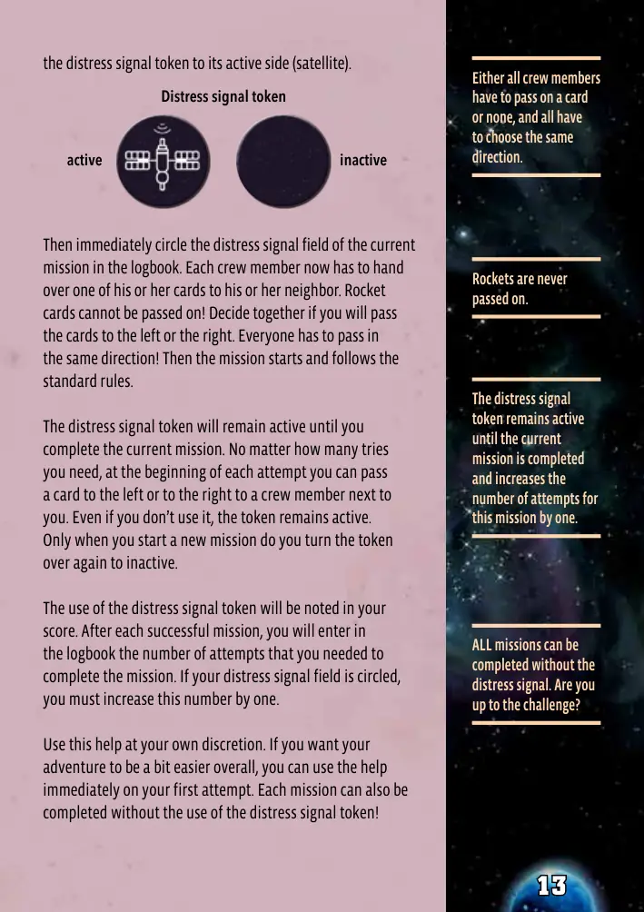
<figcaption>原版规则书 · 第 13 页（点击图片放大）</figcaption>
</figure>

<details class="mt-fold">
<summary>📝 第 13 页 AI 机翻对照（点击展开）</summary>
<div class="mt-body"><p>将求救信号指示物翻至激活面（卫星）。</p>

<p>然后在日志本中立即圈出当前任务的求救信号区域。每位船员现在必须将自己的一张牌交给邻座。火箭牌不能传递！共同决定是将牌向左传递还是向右传递。所有人都必须朝同一方向传递！然后任务开始并遵循标准规则。</p>

<p>求救信号指示物将保持激活状态，直到你完成当前任务。无论你需要多少次尝试，在每次尝试开始时，你可以将一张牌向左或向右传递给你旁边的船员。即使你不使用它，指示物也保持激活状态。只有当你开始新任务时，才将指示物再次翻至非激活状态。</p>

<p>求救信号指示物的使用将计入你的分数。在每个成功任务后，你将在日志本中记录完成任务所需的尝试次数。如果你的求救信号区域被圈出，你必须将这个数字加一。</p>

<p>自行决定是否使用此帮助。如果你想让整体冒险稍微容易一些，你可以在第一次尝试时就立即使用此帮助。每个任务也可以在不使用求救信号指示物的情况下完成！</p>

<p>非激活</p>

<p>激活</p>

<p>求救信号指示物</p>

<p>要么所有船员都必须传递一张牌，要么都不传递，并且所有人都必须选择同一方向。</p>

<p>火箭牌从不传递。</p>

<p>求救信号指示物保持激活状态，直到当前任务完成，并将该任务的尝试次数增加一。</p>

<p>所有任务都可以在不使用求救信号的情况下完成。你准备好接受挑战了吗？</p></div>
</details>

<figure>
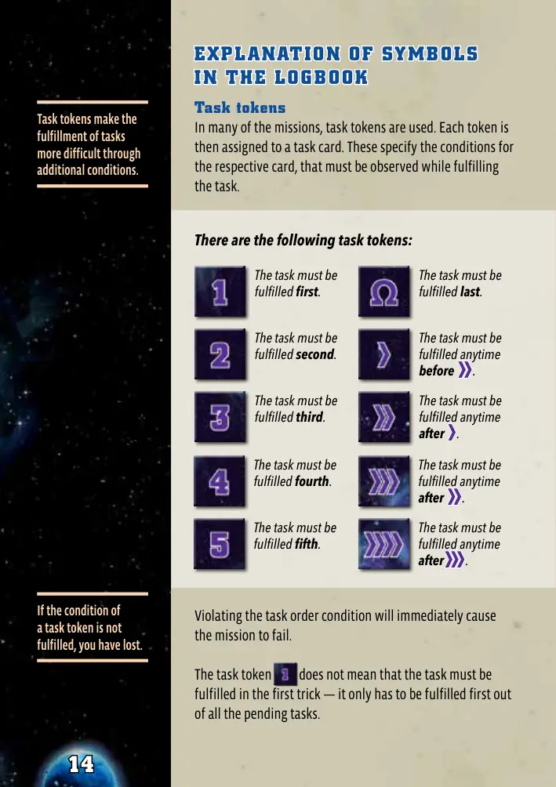
<figcaption>原版规则书 · 第 14 页（点击图片放大）</figcaption>
</figure>

<details class="mt-fold">
<summary>📝 第 14 页 AI 机翻对照（点击展开）</summary>
<div class="mt-body"><h2>符号说明</h2>

<h2>符号说明</h2>

<h2>在任务日志中</h2>

<h2>在任务日志中</h2>

<p>任务指示物</p>

<p>在许多任务中会使用任务指示物。每个指示物会被分配到一张任务卡上。这些指示物指定了相应任务的条件，在完成任务时必须遵守。</p>

<p>任务指示物通过额外条件使任务完成变得更困难。</p>

<p>如果任务指示物的条件未满足，你就失败了。</p>

<p>有以下任务指示物：</p>

<p>任务必须在第四个完成。</p>

<p>任务必须在第五个完成。</p>

<p>任务必须在第一个完成。</p>

<p>任务必须在第二个完成。</p>

<p>任务必须在第三个完成。</p>

<p>任务必须在</p>

<p>之后随时完成。</p>

<p>任务必须在</p>

<p>之后随时完成。</p>

<p>任务必须在最后一个完成。</p>

<p>任务必须在</p>

<p>之前随时完成。</p>

<p>任务必须在</p>

<p>之后随时完成。</p>

<p>违反任务顺序条件将立即导致任务失败。</p>

<p>任务指示物</p>

<p>并不意味着任务必须在第一个墩中完成——它只需要在所有待完成任务中第一个完成即可。</p></div>
</details>

<figure>
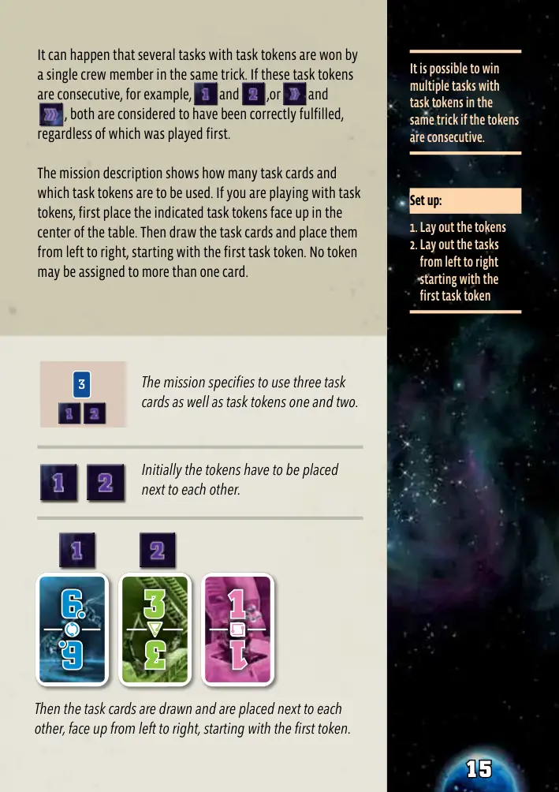
<figcaption>原版规则书 · 第 15 页（点击图片放大）</figcaption>
</figure>

<details class="mt-fold">
<summary>📝 第 15 页 AI 机翻对照（点击展开）</summary>
<div class="mt-body"><p>如果指示物是连续的，可以在同一个墩中完成多个带任务指示物的任务。</p>

<p>可能会发生单个船员在同一墩中完成多个带任务指示物的任务。如果这些任务指示物是连续的，例如</p>

<p>和</p>

<p>，或</p>

<p>和</p>

<p>，无论哪个先打出，都视为正确完成。</p>

<p>任务描述会显示使用多少张任务卡和哪些任务指示物。如果使用任务指示物，首先将指定的任务指示物面朝上放在桌子中央。然后抽取任务卡，从第一个任务指示物开始，从左到右放置。每个指示物不能分配给多张卡。</p>

<p>任务指定使用三张任务卡以及任务指示物一和二。</p>

<p>然后抽取任务卡，从第一个指示物开始，从左到右面朝上并排放置。最初指示物必须并排放置。</p>

<p>设置：</p>

<h3>1. 摆放指示物</h3>

<ol>
  <li>从左到右摆放任务</li>
</ol>

<p>从第一个任务指示物开始</p></div>
</details>

<figure>
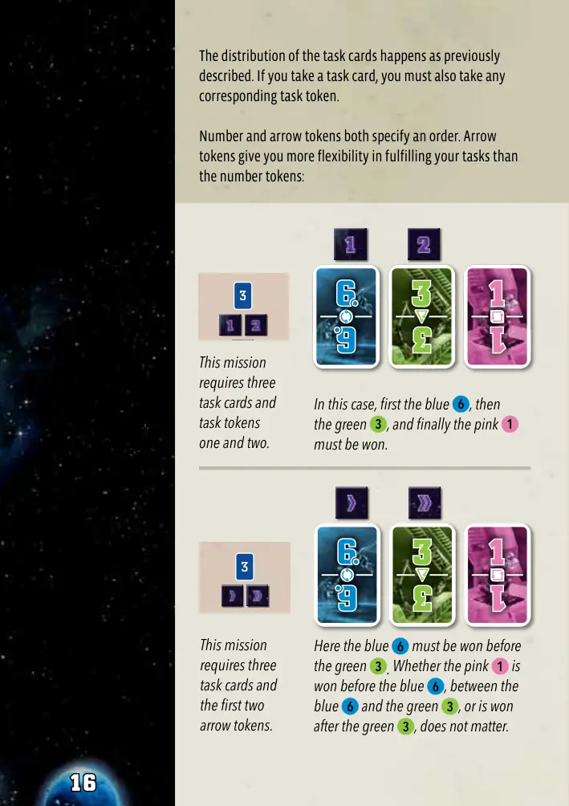
<figcaption>原版规则书 · 第 16 页（点击图片放大）</figcaption>
</figure>

<details class="mt-fold">
<summary>📝 第 16 页 AI 机翻对照（点击展开）</summary>
<div class="mt-body"><p>任务卡的分配如前所述。如果你拿取一张任务卡，你也必须拿取相应的任务指示物。</p>

<p>数字指示物和箭头指示物都指定了顺序。箭头指示物在完成任务时比数字指示物给你更多的灵活性：</p>

<p>这个任务</p>

<p>需要三张任务卡</p>

<p>和任务指示物</p>

<p>一和二。</p>

<p>这个任务</p>

<p>需要三张任务卡</p>

<p>和前两个箭头指示物。</p>

<p>在这种情况下，必须先赢得蓝色6，然后是绿色3，最后是粉色1。</p>

<p>在这里，蓝色6必须在绿色3之前赢得。粉色1是在蓝色6之前、蓝色6和绿色3之间，还是在绿色3之后赢得，并不重要。</p></div>
</details>

<figure>
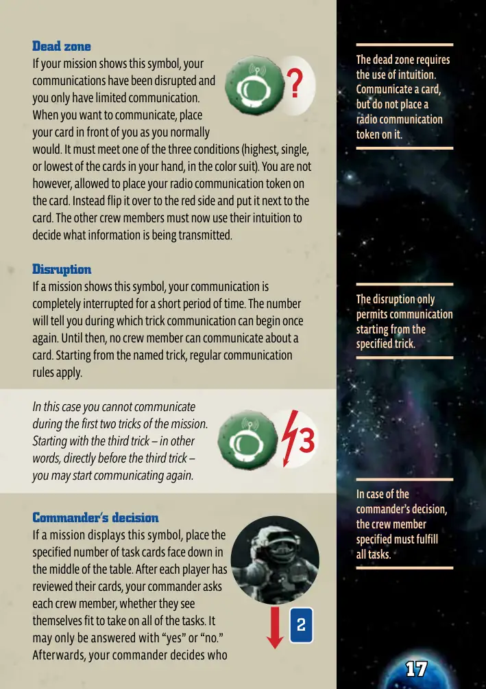
<figcaption>原版规则书 · 第 17 页（点击图片放大）</figcaption>
</figure>

<details class="mt-fold">
<summary>📝 第 17 页 AI 机翻对照（点击展开）</summary>
<div class="mt-body"><p>死区</p>

<p>如果你的任务显示此符号，你的通讯已被中断，你只有有限的通讯能力。</p>

<p>当你想要通讯时，像平常一样将你的牌放在你面前。它必须满足三个条件之一（你手中牌的最高、单张或最低，按花色）。然而，你不允许在你的牌上放置通讯指示物。相反，将其翻到红色一面，放在牌旁边。其他船员现在必须使用他们的直觉来判断正在传输什么信息。</p>

<p>中断</p>

<p>如果任务显示此符号，你的通讯在短时间内完全中断。数字将告诉你从哪一墩开始可以再次通讯。在此之前，没有船员可以就一张牌进行通讯。从指定的那一墩开始，适用常规通讯规则。</p>

<p>在这种情况下，你不能在任务的前两墩期间进行通讯。从第三墩开始——换句话说，直接在第三墩之前——你可以开始再次通讯。</p>

<p>指挥官决定</p>

<p>如果任务显示此符号，将指定数量的任务牌面朝下放在桌子中央。每位玩家查看他们的牌后，你的指挥官会询问每位船员，他们是否认为自己适合承担所有任务。只能用"是"或"否"来回答。</p>

<p>之后，你的指挥官决定谁</p>

<p>?</p>

<p>死区需要</p>

<p>使用直觉。</p>

<p>通讯一张牌，</p>

<p>但不要在它上面</p>

<p>放置通讯指示物。</p>

<p>中断只允许</p>

<p>从指定的墩开始通讯。</p>

<p>在指挥官决定的情况下，</p>

<p>指定的船员必须</p>

<p>完成所有任务。</p></div>
</details>

<figure>
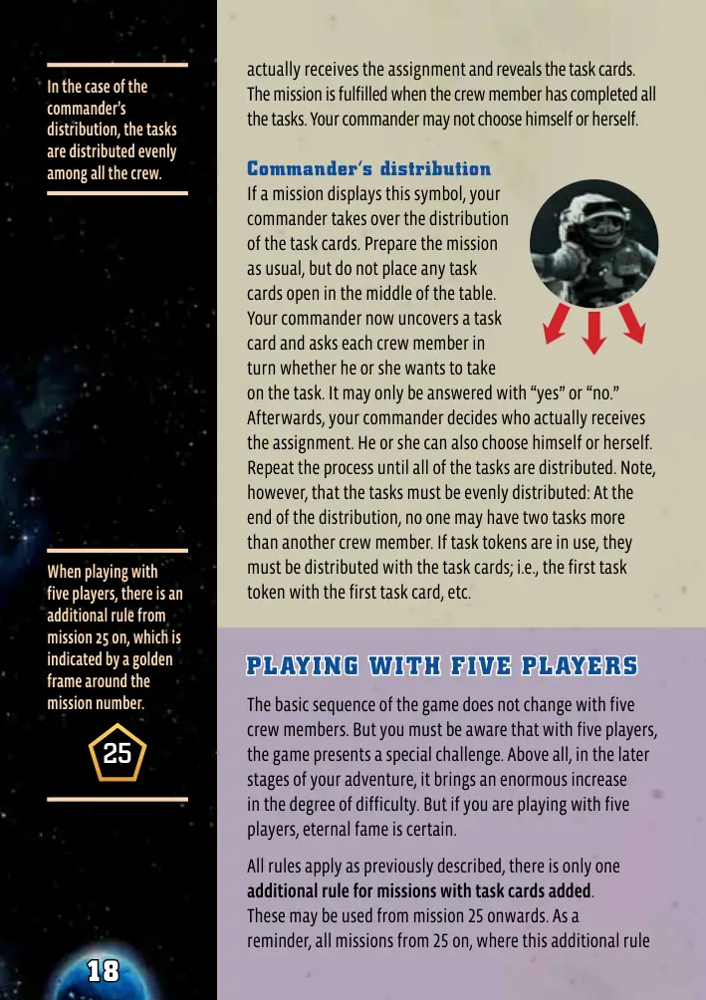
<figcaption>原版规则书 · 第 18 页（点击图片放大）</figcaption>
</figure>

<details class="mt-fold">
<summary>📝 第 18 页 AI 机翻对照（点击展开）</summary>
<div class="mt-body"><p>实际上接收任务并展示任务卡。</p>

<p>当船员完成了所有任务时，任务即算完成。你的指挥官不能选择自己。</p>

<p>指挥官分配</p>

<p>如果任务显示此符号，你的指挥官将接管任务卡的分配。像平常一样准备任务，但不要将任何任务卡正面朝上放在桌子中央。</p>

<p>现在你的指挥官翻开一张任务卡，依次询问每位船员是否愿意接受该任务。只能用"是"或"否"回答。</p>

<p>之后，你的指挥官决定谁实际接收任务。指挥官也可以选择自己。</p>

<p>重复此过程直到所有任务分配完毕。然而，请注意任务必须平均分配：在分配结束时，任何人拥有的任务数不能比其他船员多两个。如果正在使用任务指示物，它们必须与任务卡一起分配；即第一个任务指示物与第一张任务卡一起，以此类推。</p>

<h2>五人游戏</h2>

<h2>五人游戏</h2>

<p>游戏的基本流程在五名船员的情况下不会改变。但你必须意识到，在五人游戏中，游戏会带来特殊的挑战。最重要的是，在你的冒险后期，它会带来难度的大幅增加。但如果你是五人游戏，永恒的荣耀是确定的。</p>

<p>所有规则如前所述适用，只有针对带任务卡的任务增加了一条额外规则。</p>

<p>这些规则可以从任务25开始使用。提醒一下，任务25及以后的所有任务，只要此额外规则适用，都会在任务编号周围有金色边框。</p>

<p>在指挥官分配的情况下，任务在所有船员之间平均分配。</p>

<p>当五人游戏时，从任务25开始有额外规则，该规则通过任务编号周围的金色边框表示。</p></div>
</details>

<figure>
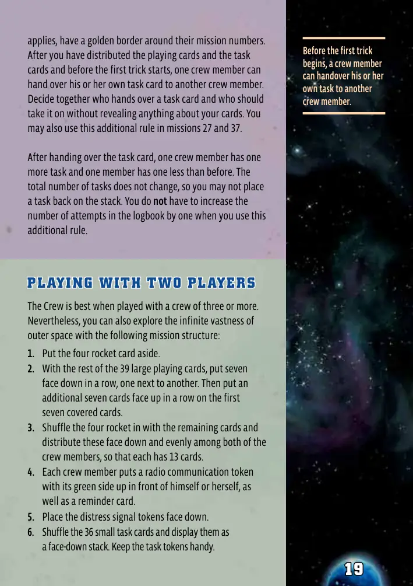
<figcaption>原版规则书 · 第 19 页（点击图片放大）</figcaption>
</figure>

<details class="mt-fold">
<summary>📝 第 19 页 AI 机翻对照（点击展开）</summary>
<div class="mt-body"><p>适用时，其任务编号周围会有金色边框。</p>

<p>在你分发完游戏卡牌和任务卡牌，但在第一墩开始之前，一名船员可以将自己的任务卡交给另一名船员。</p>

<p>共同决定谁交出任务卡，谁应该接手，但不要透露任何关于你手牌的信息。你也可以在任务27和37中使用这条额外规则。</p>

<p>交出任务卡后，一名船员多了一个任务，一名船员少了一个任务。任务总数不变，因此你不能将任务放回牌堆。使用这条额外规则时，你不需要在日志本中将尝试次数增加一次。</p>

<h2>双人游戏</h2>

<p>双人游戏</p>

<p>《The Crew》最好由三名或更多船员一起游玩。不过，你也可以通过以下任务结构探索外太空的无限广阔：</p>

<ol>
  <li>将四张火箭卡放在一边。</li>
  <li>用剩下的39张大游戏卡，将七张面朝下排成一行，一张紧挨着一张。然后在第一张被覆盖的七张卡牌上，再横向放置七张面朝上的卡牌。</li>
  <li>将四张火箭卡与剩余的卡牌洗在一起，然后面朝下平均分给两名船员，每人13张卡牌。</li>
  <li>每名船员在自己面前放置一个无线电通讯指示物，绿色面朝上，同时放置一张提醒卡。</li>
  <li>将求救信号指示物面朝下放置。</li>
  <li>将36张小任务卡洗混，并作为面朝下的牌堆展示。将任务指示物放在手边。</li>
</ol>

<p>在第一墩开始前，一名船员可以将自己的任务交给另一名船员。</p></div>
</details>

<figure>
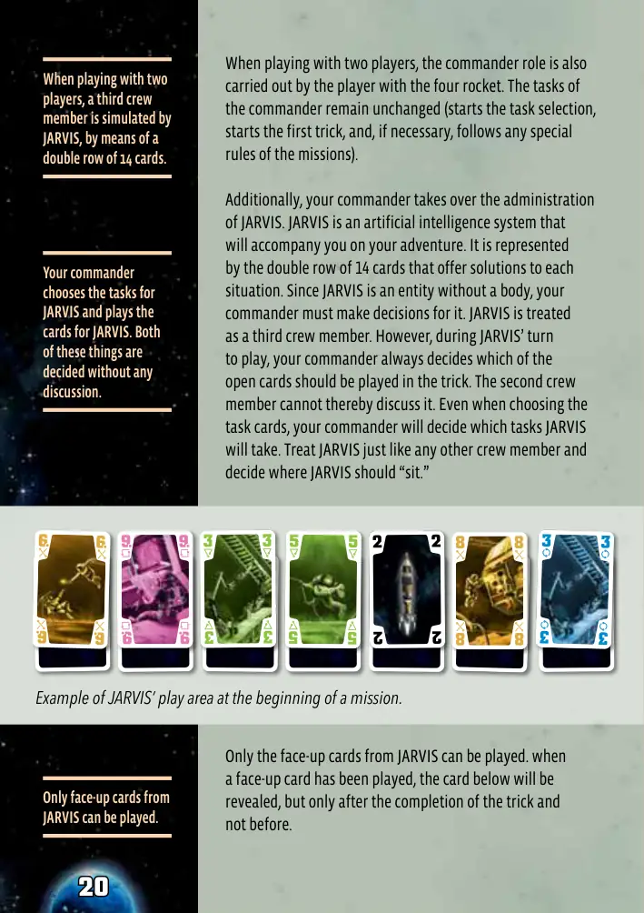
<figcaption>原版规则书 · 第 20 页（点击图片放大）</figcaption>
</figure>

<details class="mt-fold">
<summary>📝 第 20 页 AI 机翻对照（点击展开）</summary>
<div class="mt-body"><p>当两名玩家游戏时，通过JARVIS模拟第三名船员，使用一行14张牌的两行牌。</p>

<p>你的指挥官为JARVIS选择任务并打出JARVIS的牌。这两件事都无需讨论决定。</p>

<p>只有JARVIS的明牌可以打出。</p>

<p>当两名玩家游戏时，指挥官角色也由拥有四枚火箭的玩家担任。指挥官的任务保持不变（开始任务选择，开始第一墩，并在必要时遵循任务的特殊规则）。</p>

<p>此外，你的指挥官接管JARVIS的管理。JARVIS是一个将伴随你冒险的人工智能系统。它由一行14张牌的两行牌表示，这些牌为每种情况提供解决方案。由于JARVIS是无实体的实体，你的指挥官必须为其做决定。JARVIS被视为第三名船员。然而，在JARVIS的出牌回合，你的指挥官总是决定应该打出哪张明牌参与这墩。第二名船员不能就此进行讨论。即使在选择任务卡时，你的指挥官也将决定JARVIS将接受哪些任务。将JARVIS视为任何其他船员一样，决定JARVIS应该"坐"在哪里。</p>

<p>只有JARVIS的明牌可以打出。当一张明牌被打出后，下方的牌才会被翻开，但必须在完成该墩之后，而不是之前。</p>

<p>任务开始时JARVIS出牌区域的示例。</p></div>
</details>

<figure>
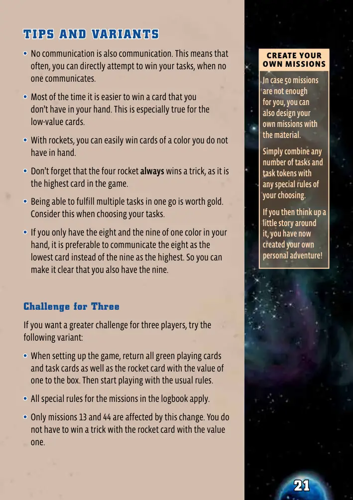
<figcaption>原版规则书 · 第 21 页（点击图片放大）</figcaption>
</figure>

<details class="mt-fold">
<summary>📝 第 21 页 AI 机翻对照（点击展开）</summary>
<div class="mt-body"><h2>小贴士和变体</h2>

<p>• 不交流也是一种交流。这意味着通常情况下，当没有人交流时，你可以直接尝试完成你的任务。</p>

<p>• 大多数情况下，赢得你没有在手牌中的卡牌会更容易。这对于低价值卡牌尤其如此。</p>

<p>• 使用火箭，你可以轻松赢得你手牌中没有颜色的卡牌。</p>

<p>• 不要忘记，四号火箭总是能赢得一墩，因为它是游戏中最高的卡牌。</p>

<p>• 能够一次性完成多个任务价值千金。在选择任务时考虑这一点。</p>

<p>• 如果你手中只有某个颜色的八和九，最好将八作为最低卡牌进行沟通，而不是九作为最高卡牌。这样你可以清楚地表明你也有九。</p>

<p>三人对战挑战</p>

<p>如果你想要一个更具挑战性的三人游戏，尝试以下变体：</p>

<p>• 在设置游戏时，将所有绿色游戏卡和任务卡以及价值为一的火箭卡放回盒中。然后按照常规规则开始游戏。</p>

<p>• 日记本中所有任务的特殊规则都适用。</p>

<p>• 只有任务13和44会受到此变化的影响。你不需要用价值为一的火箭卡赢得一墩。</p>

<h2>创造你自己的任务</h2>

<p>如果50个任务对你来说不够，你也可以用材料设计你自己的任务。</p>

<p>只需任意组合任意数量的任务和任务标记，并搭配你选择的任意特殊规则。</p>

<p>如果你再围绕它构思一个小故事，你就已经创造出了属于你自己的个人冒险！</p></div>
</details>

<figure>
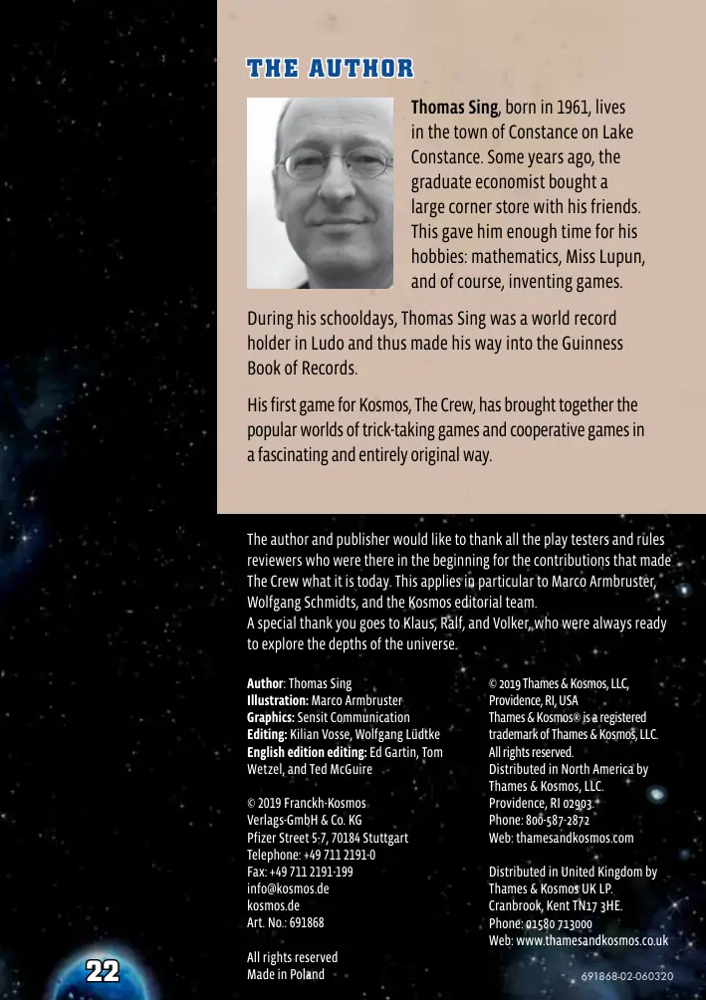
<figcaption>原版规则书 · 第 22 页（点击图片放大）</figcaption>
</figure>

<details class="mt-fold">
<summary>📝 第 22 页 AI 机翻对照（点击展开）</summary>
<div class="mt-body"><p>作者：Thomas Sing</p>

<p>插画：Marco Armbruster</p>

<p>美术：Sensit Communication</p>

<p>编辑：Kilian Vosse, Wolfgang Lüdtke</p>

<p>英文版编辑：Ed Gartin, Tom Wetzel, 和 Ted McGuire</p>

<p>© 2019 Franckh-Kosmos Verlags-GmbH &amp; Co. KG</p>

<p>Pfizer Street 5-7, 70184 Stuttgart</p>

<p>电话：+49 711 2191-0</p>

<p>传真：+49 711 2191-199</p>

<p>info@kosmos.de</p>

<p>kosmos.de</p>

<p>货号：691868</p>

<p>保留所有权利</p>

<p>波兰制造</p>

<p>© 2019 Thames &amp; Kosmos, LLC,</p>

<p>美国罗德岛州普罗维登斯</p>

<p>Thames &amp; Kosmos® 是 Thames &amp; Kosmos, LLC 的注册商标。</p>

<p>保留所有权利。</p>

<p>北美分销商：Thames &amp; Kosmos, LLC.</p>

<p>罗德岛州普罗维登斯 02903.</p>

<p>电话：800-587-2872</p>

<p>网址：thamesandkosmos.com</p>

<p>英国分销商：Thames &amp; Kosmos UK LP.</p>

<p>肯特郡 Cranbrook TN17 3HE.</p>

<p>电话：01580 713000</p>

<p>网址：www.thamesandkosmos.co.uk</p>

<p>作者和出版社感谢所有在游戏初期参与测试和规则审阅的测试人员，他们的贡献造就了今天的《The Crew》。特别感谢 Marco Armbruster、Wolfgang Schmidts 和 Kosmos 编辑团队。</p>

<p>特别感谢 Klaus、Ralf 和 Volker，他们总是准备好探索宇宙的深处。</p>

<h2>作者</h2>

<h2>作者</h2>

<p>Thomas Sing，1961年出生，居住在康斯坦斯湖畔的康斯坦斯镇。几年前，这位经济学毕业生和他的朋友们一起买下了一家大型杂货店。这给了他足够的时间发展他的爱好：数学、Miss Lupun，当然还有发明游戏。</p>

<p>学生时代，Thomas Sing 曾是飞行棋的世界纪录保持者，因此他的名字被载入《吉尼斯世界纪录》。</p>

<p>他为 Kosmos 设计的第一款游戏《The Crew》，以迷人且完全原创的方式，将流行的墩类游戏与合作游戏的世界结合在一起。</p>

<p>691868-02-060320</p></div>
</details>
        </div>

        <footer class="source-note">
<p>来源：<a href="https://cdn.shopify.com/s/files/1/0104/6331/3977/files/691868_Crew_Manual.pdf" target="_blank" rel="noopener">Thames &amp; Kosmos 官方（官方商店 Shopify CDN）</a>（2019 691868_Crew_Manual.pdf）· 译文仅供个人学习查阅，规则内容归 Thames &amp; Kosmos 及版权方所有 · 原文版權與商标归原出版方。</p>
</footer>
      </article>
    </main>
  </div>

  <button class="to-top" aria-label="返回顶部" data-i18n-aria="backTop">↑</button>
  <script src="../assets/js/i18n.js"></script>
  <script src="../assets/js/main.js"></script>
</body>
</html>
